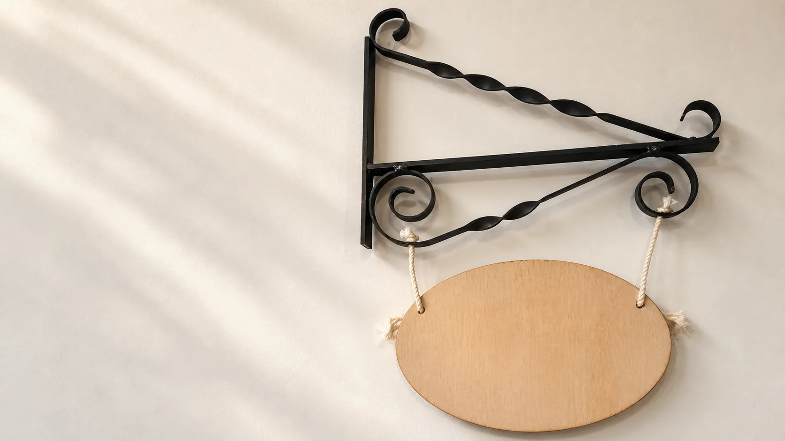

Primary pathway
Swinging Sign
Develop a sign that communicates clearly and connects a hanging plaque to an approved support system.
Teacher to confirm: The supplied photograph guides appearance analysis. The exact plan, stock, joints, mounting and practical sequence are Teacher to confirm.